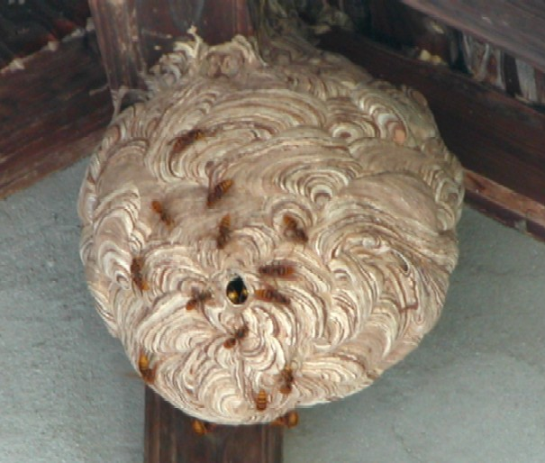
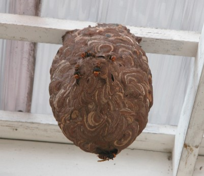

スズメバチなどのハチに刺されてしまったら
・すぐに刺された場所を水で洗い流す。
・水で洗いながら、刺された場部分を絞るようにして毒を体の外へ洗い流す。
・直ちに病院へ行き、適切な治療を受ける。
・焦って急ぐような行動は避ける。毒が体中を回りやすくなってしまいます。
仮にスズメバチに刺されてしまったとしたらどうしたらよいのでしょうか？
本なので調べてみますと、いろいろな民間療法が紹介されています。しかし、どの方法が一番効果的なのかと言われても正直私にはわかりません。ただ１つだけいえるのは、とにかく刺されてしまったらまずは水で毒を洗い流すことです。
刺された場所に触れるのはつらいかもしれませんが、絞り出し、１秒でも早く毒を洗い流してください。その後病院直行です。毒さえ体外に出してしまえば、反応も小さくて済みます。
刺されるという機会はそうはないと思いますが、ぜひ覚えておいてください。
ちなみに、スズメバチの種類によっても毒の効果は違ってきます。
特に怖いのがオオスズメバチです。毒の量だけ見ても他のスズメバチの倍以上です。また、ほかのスズメバチに刺された場合、アナフィラキシーショックの場合を除き、痛みだけですみますが、オオスズメバチでは、痛みのほかに、呼吸器系や心臓の方に影響が出てきます。
大学時代、私一人埼玉県で実験中、オオスズメバチの毒撃ミサイルを左の手首に受けたことがあります。その時、針がモロに刺さったようで、おそらく手首の血管内に毒が回ったのでしょう。痛みだけでは収まらず、心臓の鼓動が早くなり、喉がぜいぜいしてきました。
「何かいつもと違うな・・・・、ヤバイかも・・・。」と感じ、すぐに実験を中断しました。そして３０分ほど休憩をとりました。
スズメバチのショック症状というのは３０分以内に出るのは知っていたので、とにかく毒を絞り様子を見ました。結果、なんとか大丈夫の様でした。正直そのまま帰りたかったのですが、卒業論文に使う貴重な実験の真っ最中でしたので、その後実験は再開しました。
帰宅途中の電車の中では、まるで風邪をひいて熱があるかのような、だるさがあり、喉はぜいぜいしたままでした。腫れもひどく、左手から左肩までが膨れて痛みました。正直こんなにもオオスズメバチは危険なのか、と実感した日でもありました。
ちなみに、この実験に使ったオオスズメバチの巣は、その地域で有名な蜂の巣駆除の方と一緒に採ってしまいました。結構デカイ巣で、こんなので実験してたのか・・、少々あせりました・・・。

屋根の軒下に作られたキイロスズメバチの巣スズメバチに刺されないためには
またスズメバチの種類以外にも、刺された場所や刺され方によってもその被害は違ってきます。
例えば、腕を軽くかするかのようにさされた場合と、スズメバチの存在に全く気が付かずに頭を「ブスリ！」ともろに刺された場合とでは、痛み、その後の被害は全然違ってきます。
やはりスズメバチの被害は受けた毒の量によって被害は異なり、腕や足などを軽くかすった程度では、あまり腫れたりせず、痛みもそんなに長くは続きません。刺された次の日にはそんなに痛くないはずです。
一方で、スズメバチに無防備でもろに刺された場合、スズメバチの毒針は皮膚に深く突き刺さり、毒も多く注入されます。これだけでもつらいのですが、人の弱点でありる頭や、血管に刺さると更に危険です。
私も在学中に、スズメバチの巣があるとも知らず飛び出し、キイロスズメバチに頭を思いっきり刺されたことがあります。スズメバチに無防備なところをやられたため、突然の出来事に驚きましたが、それ以上に痛い事なんの・・・。すぐに手で払い、教授に水で頭を洗っていただきましたが、とにかくひどくなんとも耐え難い頭痛でした。
今でもあまり思い出したくないのですが、刺されてから3時間はひどい頭痛に悩まされました。
あれがもし腕や足でしたらまだ我慢できますが、頭は別です。人間の弱点とはよく言ったものです。とにかく我慢できないくらいつらいのです。
また以前、巣の駆除の後油断して、頭を残党のキイロスズメバチに刺されたことがあります。この時はすぐにうまく振り払いましたが、頭だけでなく、背中や腕まで腫れが広がっていました。これはあまり良い反応とは言えませんが、毒液が一気に回ったようでした。
これが頭に刺された時の被害です。つまり、何としてもスズメバチには頭を刺されてはいけないということだと思います。頭は帽子をかぶるだけでも刺される被害は減ります。どうぞ外出中はなるべく帽子をかぶるようにしましょう。

軒下のコガタスズメバチの巣-
生け捕り捕獲など

-
種類や生活史・巣の場所等

-
被害者や対策・対応等

-
すずめばちやについて